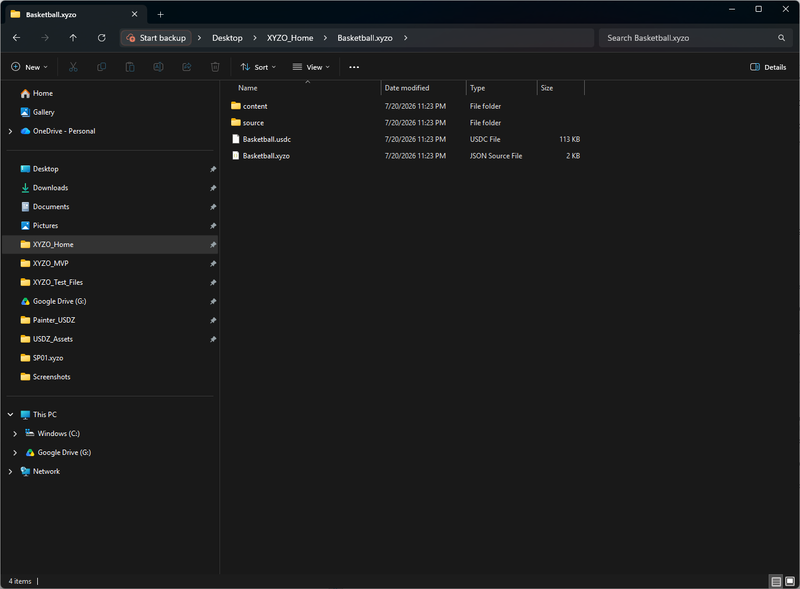
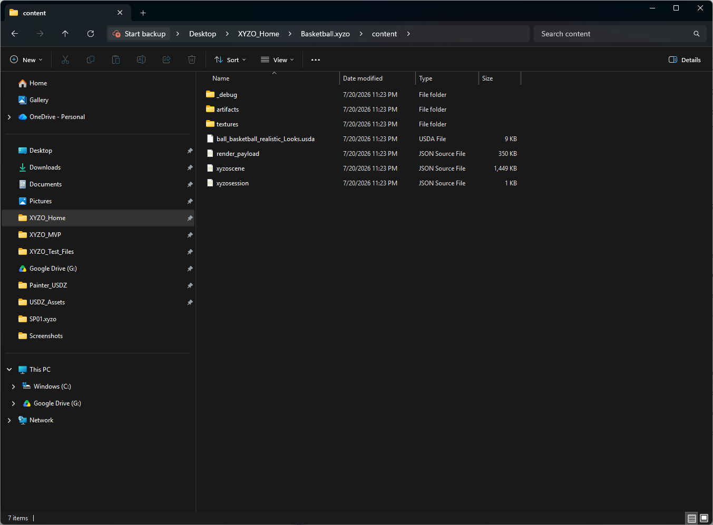

01 — NORMALIZE
WORKING TODAY
Normalize
Turn source files into predictable packages with consistent scale, structure, naming, and identity.



Source intake
Supported source files enter one predictable normalization path before canonical structure is created.